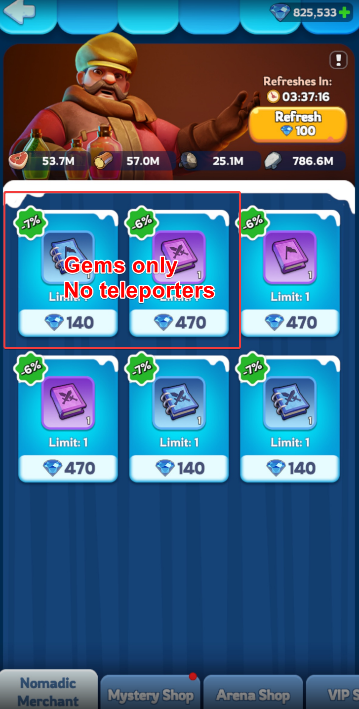
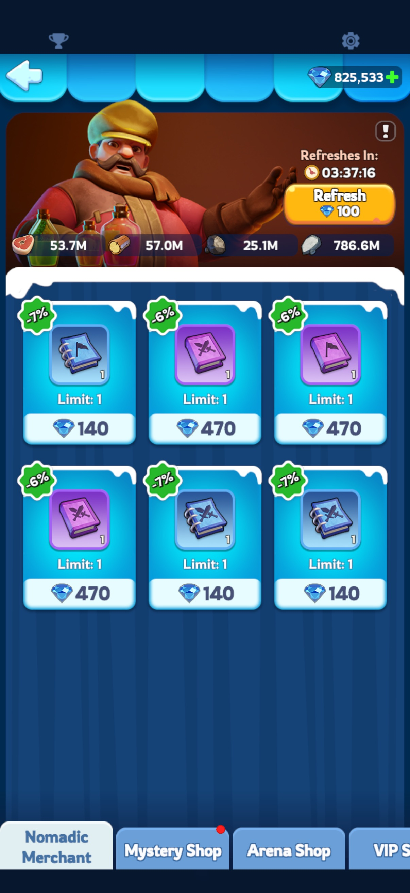

Whether you're competing in Foundry Battle, TAL, or everyday combat, Advanced Teleporters are one of the most essential consumables in the game. Beyond the Alliance Store, the Nomadic Merchant is the most reliable daily source.
It sounds obvious — but after mentioning this in alliance chat, I realized not everyone knows how to use the Nomadic Merchant efficiently. Here's a full breakdown.
Which Slots Can Drop Advanced Teleporters
The Nomadic Merchant has six slots. The top-left and top-center slots only ever show Gem-purchased items — Advanced Teleporters will never appear there. To farm teleporters, you only need to watch the other four slots.

Three Budget Strategies
Pick the approach that fits your Gem reserves.
🐳 Whale Budget｜Thousands to ~10,000 Gems/day
In the four eligible slots, skip only these three things:
Buy everything else — resources, other books, whatever shows up. Once all four eligible slots are showing only low-discount books and Random Teleporters, use the free refresh to cycle to the next round. You can also spend 50 or 100 Gems on extra refreshes each cycle to maximize Advanced Teleporter yield.

🐬 Dolphin Budget｜~2,000–5,000 Gems/day
In the four eligible slots, only buy items priced at 100 Gems or less. Skip everything else. Use only free refreshes — no paid cycling.
A sustainable middle-ground approach, well-suited to players sitting on around 100,000 Gems who want a reliable daily routine.
🐟 Small Fish Budget｜Zero Gems
Don't spend a single Gem. Whenever all six slots are showing Gem-only items with nothing worth grabbing for free, hit the free refresh and wait for the next cycle.
Why It's Worth Your Time
Yes, how many Advanced Teleporters you get each day is pure luck. But consider the VIP Shop: one Advanced Teleporter costs 2,000 Gems, and you're capped at two purchases per week.
If you can pick one up for close to — or even less than — 2,000 Gems through the Nomadic Merchant, that's already a win. And even if you end up spending 2,000 Gems on it, you'll likely have picked up speedup items along the way. Any way you look at it, making the Nomadic Merchant part of your daily routine is worth it.
Good luck — may your merchant always roll Advanced Teleporters!